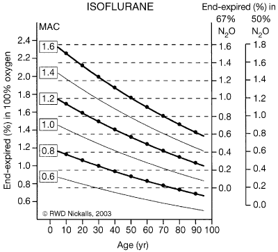

Minimum alveolar concentration - 2
The MAC is defined as the minimal alveolar concentration required to prevent purposeful movement in response to a supramaximal stimulus in 50% of animals. Variations include:
MAP (minimal alveolar pressure) - same as MAC but expressed as partial pressure: this takes account of variations in atmospheric pressure.
MACaw (MAC awake) - concentration required to produce unconsciousness in people, usually about 0.5 MAC. (MAC is determined at a spinal level.)
MACbar (MAC which blocks adrenergic responses) - 1.45MAC for halothane, 1.3MAC for isoflurane and desflurane, 3.5MAC for sevoflurane (in people).
MAC varies with age (graph), and with temperature (reduced by
4 - 5% / degree drop). Strangely, nitrous oxide is not affected by temperature.
MAC is also dramatically reduced by analgesics, especially opioids, but it
never reaches zero.
Species differences are usually minor.

(Nickalls RWD, Mapleson WW. Age related iso-MAC charts for isoflurane, sevoflurane
and desflurane in man. Br J Anaesth 2003; 91 : 170–4)
David White, Uses of MAC, British Journal of Anaesthesia, 2003, Vol. 91, No. 2 167-169
| 5 CNS index |
| |
copyright
Massey University
|